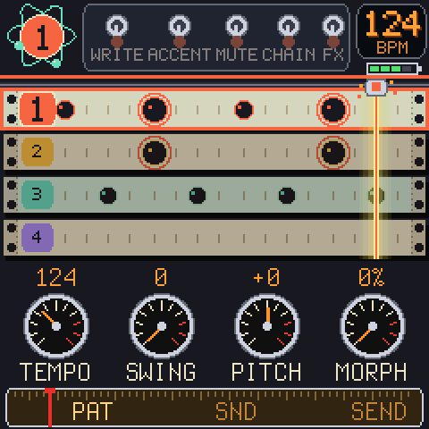
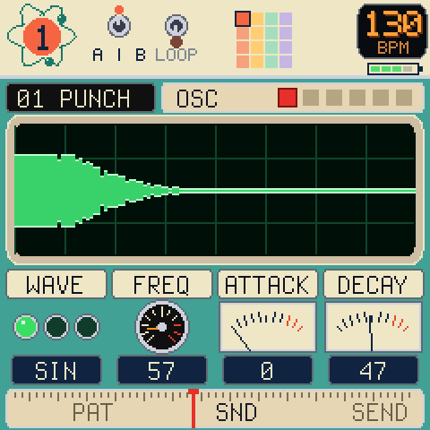
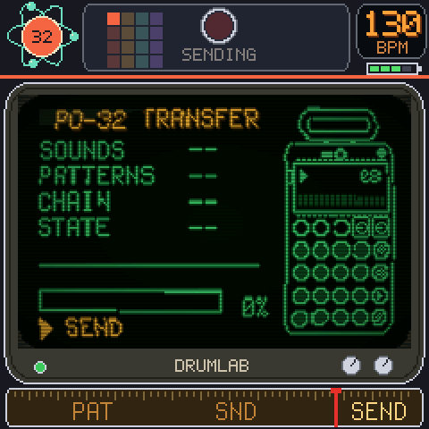
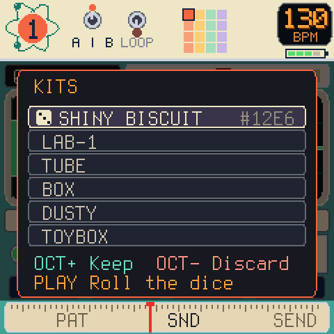
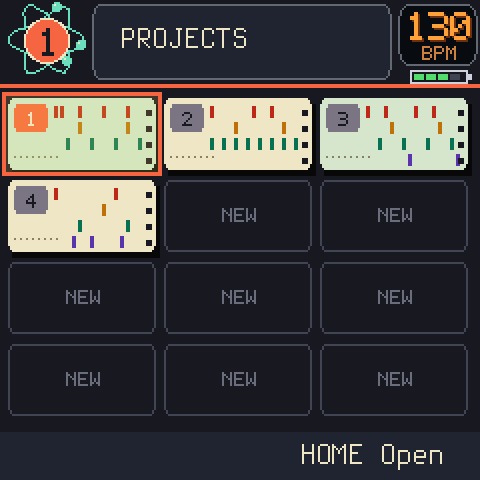
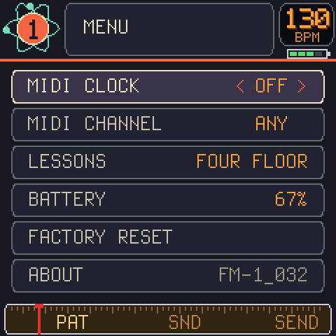

A drum machine for the FM-1, built like the PO-32 tonic: 16 sounds, 16 patterns, 4 lanes. Make the beat here, then send it to a PO-32 as audio.
No PO-32? It's still a drum machine.






What is it
A simple (to me) way to make drum machine beats, the way the PO-32 does it. Three views, and you'll spend your time in them:
- PATTERN - 16 steps, 4 lanes. Write a beat, mute a lane, throw effects at it.
- SOUND - every sound has 21 settings. Turn the knobs, roll a whole new kit.
- SEND - plug a cable into a PO-32 and it hears all of it.
Example workflow
- Hold HOME, pick a NEW project, tap HOME to open it.
- Tap REC and press keys to write steps. PRESETS picks the sound. Hit PLAY.
- Hit HOME to flip to SOUND. Turn ALGORITHM to flip pages, turn the knobs. Hit OCT+ to roll a kit.
- Hit HOME until SEND is visible. Hit PLAY, then OCT+. The PO-32 does the rest.
Never touched a drum machine? Hit GLO + HOME, pick LESSONS and play along with the rings.
The three brothers
ChipboxChiptune tracker. Over 35 sound chips.
SmileyfaceAn acid bass line.
DrumlabThis one. Drums, and a PO-32.
They get along: Drumlab can send MIDI clock, and Smileyface follows it. Here's how.
Install
Tested?
- Yes, on a real FM-1. Not every corner has met a real PO-32 yet.